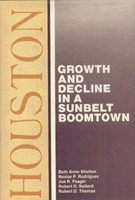

Analyzing Houston's patterns of economic growth and decline from 1900 to the present
Analyzing Houston's patterns of economic growth and decline from 1900 to the present


 Analyzing Houston's patterns of economic growth and decline from 1900 to the present
Analyzing Houston's patterns of economic growth and decline from 1900 to the present

|  |
HoustonGrowth and Decline in a Sunbelt BoomtownBeth Anne Shelton, Joe R. Feagin, Robert Bullard, Nestor Rodriguez and Robert D. Thomascloth EAN: 978-0-87722-607-9 (ISBN: 0-87722-607-5) |
Journalists have described Houston as the largest boomtown, oil capital USA, the city that the depression missed, and capital of the Sunbelt. The recession in the mid-1980s together with the drop in oil prices and devaluation of both the Mexican peso and American dollar witnessed the "Golden Buckle of the Sunbelt" in unexpected decline. This book examines the historical context, demographic features, politics, minority communities, and economic characteristics of Houston from 1900 to the present, in order to analyze the city’s patterns of economic growth and decline.
After a discussion of the emergence of the oil industry in the 1920s, the authors show how oil capital and government intervention affected the city’s growth. They examine the basic political shifts and alignments—including the Municipal Utility Districts in Houston’s extraterritorial jurisdiction—that enabled the city to become an industrial center in the world economy. Discussing the conflict between business and community groups, they describe how privately directed development and rapid growth affected different segments of the city’s population.
The book examines in detail the effects of Houston’s economic expansion on the city’s two largest minority communities in terms of income, educational, and job inequality. The issue of undocumented immigrants from Mexico and Central America also is addressed. Unlike many cities where the major split is urban/suburban, in Houston there are myriad cleavages based on ethnicity, race, socioeconomic status, and neighborhood. The authors demonstrate how this diversity prevents consideration of Houston as a whole or unified city.
For all the discussion of Sunbelt cities in recent decades, there have been few systematic book-length treatments of particular cities in the region. Houston: Growth and Decline in a Sunbelt Boomtown offers the first multi-dimensional analytical perspective on this celebrated Texas metropolis.
Beth Anne Shelton is Assistant Professor of Sociology at State University of New York at Buffalo.
Joe R. Feagin is Professor of Sociology at the University of Texas at Austin.
Robert Bullard is Associate Professor of Sociology at the University of California, Berkeley.
Nestor Rodriguez is Assistant Professor of Sociology at the University of Houston.
Robert D. Thomas is Professor of Political Science at the University of Houston.
Comparative American Cities, edited by Joe T. Darden.
No longer active.
© 2015 Temple University. All Rights Reserved. This page: http://www.temple.edu/tempress/titles/514_reg.html.